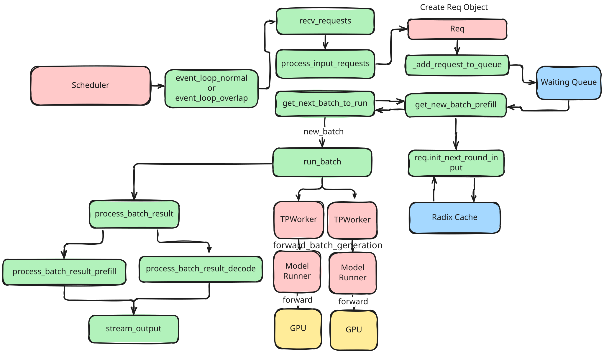

SGLang Code Walk Through
English version | 简体中文
This doc serve as a developer-level guidance and provide a brief code walkthrough of SGLang's backend, tracing the path of how requests are processed, as shown in the following figure.

Specifically, requests flow through the following process to get responses:
-
The user launches the Server, initializing the FastAPI app, TokenizerManager, DetokenizerManager, and Scheduler, each running with its infinite event loop.
-
The user sends
/v1/chat/completionsrequests to the FastAPI Server, which routes them to TokenizerManager via thev1_chat_completionsendpoint. -
The
v1_chat_completionsfunction converts the incoming requests into aChatCompletionRequest,transforms them into aGenerateReqInputand calls TokenizerManager'sgenerate_requestmethod. -
TokenizerManager tokenizes the requests and forwards them to the Scheduler as Python objects (
pyobj) while calling TokenizerManager‘s_wait_one_response. -
The Scheduler loops its infinite
event_loop_normalto handle the requests:- The Scheduler receives the requests via
recv_requests, processes them throughprocess_input_requests, handles the generation logic withhandle_generate_request, and adds them to thewaiting_queue. - From the
waiting_queue, the Scheduler usesget_next_batch_to_runto create aScheduleBatchfor the upcoming requests. - The Scheduler executes the
run_batchfunction, converting theScheduleBatchinto aModelWorkerBatch. - The Scheduler calls TpModelWorker's
forward_batch_generation, awaiting thelogits_outputandnext_token_ids. - TpModelWorker initializes a
ForwardBatch, forwards it to ModelRunner, and waits for thelogits_output. - The ModelRunner processes the
ForwardBatch, classifies it and callsforward_extendto execute the model's forward pass. - The model, accelerated by
AttentionBackend, generates logits, which are returned to ModelRunner and subsequently to TpModelWorker. - TpModelWorker receives the
logits_outputfrom ModelRunner, calls ModelRunner'ssamplemethod to generatenext_token_ids, and sends them back to the Scheduler. - The Scheduler processes batch results through
process_batch_result, cache requests viatree_cache.cache_finished_req(req)and verifies completion status viacheck_finished, and handles caching. For unfinished requests, the Scheduler continues the event loop until the request meets the completion criteria; for finished requests, they are forwarded to Scheduler'sstream_output. - In
stream_output, Scheduler processes the outputs, wraps them intoBatchTokenIDOut, and send to the DetokenizerManager.
- The Scheduler receives the requests via
-
The DetokenizerManager, running its own event loop, receives
BatchTokenIDOut, processes it, and sendsBatchStrOutback to TokenizerManager. -
The TokenizerManager, within its event loop, receives the results, processes them via
handle_loop, updates the internal state, and yields the response to the server. -
The FastAPI Server packages the response and sends it back to the user.
Acknowledge And Notation
All the discussions are based on release v0.4.0. We sincerely appreciate Chenyang Zhao, Wenxuan Tan, Simon Veitner, Shuai Shi, Shizhe Diao, Shending Hu, Xiaoyu Zhang, agiping、Zhizhou Sha for their contribution to this document.
Note that this document is under construction and these parts will be included in the future.
- Radix Cache Management with Attention Backend.
get_next_batch_to_run: How to fetch and write KV cache for requests in each batch.get_model_worker_batch.write_req_to_token_pool_triton.- CUDA Graphs for Attention Backend.
- Overlapping scheduling.
Launch Server
SGLang features an SRT (SGLang Runtime) Server for serving online HTTP requests and an Engine for offline model execution without HTTP protocol. Key functions, launch_server and launch_engine, are in server.py. The launch_engine function initializes core SRT Server components.
- Set up configs (logger, server args, CUDA/NCCL env, inter-process ports) and download the model and tokenizer.
- If
dp_size > 1, runrun_data_parallel_controller_processto start multiple data parallel replicas; otherwise, initialize a Scheduler for eachtp_rankas a subprocess to handle requests from TokenizerManager and manage KV Cache. - Run TokenizerManager in the Engine's main process and DetokenizerManager as a subprocess: the former tokenizes requests and sends them to the Scheduler, and the latter converts token IDs returned by the Scheduler to text and sends them back to the Server. Note that for multi-node inference (e.g., deploying Llama 3.1 405B on two nodes with a total of 16 H100 GPUs), TokenizerManager and DetokenizerManager only run on the first node.
- Configure chat template (if specified) and wait for Scheduler processes to signal that all processes are ready, along with their configuration information.
Note that in version 0.4.0, the DataParallelController is used for round-robin scheduling of requests across multiple data parallel replicas. We will change this to SGLang Router for multiple replicas routing in the future.
Forward Requests From Server
The Server employs a FastAPI app to define API endpoints, forwarding /v1/chat/completions requests to the TokenizerManager via v1_chat_completions.
- Parse JSON from
raw_requestinto aChatCompletionRequest, convert it toGenerateReqInputand configuresampling_paramsusingv1_chat_generate_request. - Call the TokenizerManager's
generate_requestand wait for the response. After getting the response, handle streaming or non-streaming responses based on thestreamparameter. - For streaming, process the
generate_requestoutput incrementally withgenerate_stream_resp; for non-streaming, wait the async result and convert it to aChatCompletionResponseviav1_chat_generate_response.
Generate Request In TokenizerManager
TokenizerManager is initialized by launch_server in the Server's main process to tokenize requests.
Initialization
- Set up ZeroMQ for inter-process communication, including sockets for the communication with DetokenizerManager and Scheduler.
- Configure
server_args, enablemetrics, and initializemodel_config,tokenizer, and placeholders for multi-modal image processors.
generate_request
- If TokenizerManager's event loop is not initialized, initialize it here.
- Pause processing if model weights are updating via
update_weights_from_diskorupdate_weights_from_distributed. - Validate request type is aligned with the model's
is_generationsetting. - Normalize requests using
normalize_batch_and_argumentsto manage batching, parallel sampling, and default parameters. - Process single requests with
_tokenize_one_request, send to the scheduler, and wait for responses from_wait_one_response. - Process batch requests with
_handle_batch_request, tokenize inputs, manage parallel sampling, interact with the scheduler, and yield responses in both streaming and non-streaming modes.
Scheduler Receive Requests and Process Batches
Here is the overview of the Scheduler:

Scheduler runs as Server's subprocess, initialized via run_scheduler_process and executes its infinite event loop with event_loop_normal or event_loop_overlap.
Initialization
- Set up ZeroMQ for communication with TokenizerManager.
- Configure
server_args,port_args,model_config,sessions, and initialize TpModelWorker or TpModelWorkerClient based on overlap scheduling. - Initialize tokenizer and processor, manage caching using ChunkCache or RadixCache and configure SchedulePolicy.
- Set up chunk prefill parameters and GrammarBackend for constraint decoding.
Event Loop
The Scheduler continuously executes its event loop, alternating between process_input_requests,get_next_batch_to_run, run_batch and process_batch_result.
process_input_requests
Iterates over incoming requests, identifying their types, and dispatches them to appropriate handlers.
get_next_batch_to_run
- Merge
last_batchwithrunning_batchif applicable and prioritize prefill batches withget_new_batch_prefill. - If no prefill batch, update
running_batchfor decode batch by filtering requests, managing GPU memory, and adjusting decoding parameters.
run_batch
- For generation models, use TpModelWorker’s
forward_batch_generationto generate a new token orforward_batch_idlefor idle tasks, returning results toevent_loop_normal. - For embedding or reward models, execute
forward_batch_embedding, and return embeddings.
process_batch_result
After run_batch, Scheduler processes batch results in event_loop_normal:
- Decode mode processes outputs, updates request states, handles token and probability data, manages memory, and logs statistics.
- Extend mode handles prefill results, processes input tokens, and prepares for further decoding or embedding.
- Finished requests are cached via
cache_finished_req, streamed to DetokenizerManager. Unfinished requests are updated and looped back intoget_next_batch_to_runfor further processing until completion.
Note that LLM inference is typically divided into Prefill and Decode phases based on their different computational characteristics. For the concepts of Prefill and Decode, you can refer to this article from HuggingFace. However, in SGLang, extend mode is used in most cases rather than prefill mode. While Prefill mode initializes KV-Cache for new requests, typically using Paged KV-Cache, Extend mode incrementally updates existing KV-Cache using Ragged Tensors, which is more efficient. This makes it particularly well-suited for long sequences or multi-turn dialogue requests that SGLang is designed for.
TpModelWorker Manage Forward and Token Sampling
TpModelWorker manages ModelRunner's forward and sampling for batches of requests scheduled by Scheduler.
Initialization
- Initializes tokenizer, model configuration and ModelRunner.
- Configures device settings and memory pool limits.
forward_batch_generation
- Create a
ForwardBatch, compute logits and sample next tokens using ModelRunner'sforwardandsample. - Return
logits_outputandnext_token_idsto Scheduler forprocess_batch_result.
forward_batch_embedding
- Create a
ForwardBatch, get thelogits_outputandembeddingsfrom ModelRunner'sforward. - Embedding requests do not require sampling, so skip the ModelRunner's
sampleand directly return theembeddingsto Scheduler.
ModelRunner Manages Model Execution
ModelRunner initialize the attention backend and manage the loaded model to perform forward passes for generation and embedding tasks.
Initialization
Initializes distributed environment, loads the model, applies tensor parallelism, and sets up memory pool and attention backend.
forward
The forward function determines the appropriate forward mode for processing batches based on the forward_mode:
forward_decode: Initializes forward metadata and call the Model'sforwardwith input IDs and positions.forward_extend: Initializes forward metadata and call the Model'sforwardfor generation or embedding tasks.forward_idle: Manages the forward pass when the forward mode is idle.
Model Load Weights and Perform Forward
ModelRunner's self.model is a instance of the model class. All supported models can be found in python/sglang/srt/models. We take Qwen2ForCausalLM for example.
Qwen2ForCausalLM is structured as follows:
model: weights used for the forward pass.embed_tokens: mapsinput_idsintoembeddings.lm_head: projects the hidden states back to the vocabulary space.logits_processor: manipulateslogitsto perform tasks such as sampling and normalization.pooler: pooling mechanism for extracting embeddings or computing rewards.
forward
The forward function in Qwen2ForCausalLM processes input IDs to produce logits for next-token prediction of chat completion requests or embeddings for reward/embedding requests:
- Converts
input_idsto embeddings usingembed_tokens. Sequentially forwards embeddings through multiple Qwen2DecoderLayer layers. - Returns embeddings via
poolerifget_embeddingis True; otherwise, usinglogits_processorto computelogitsand return.
The most import acceleration of SGLang comes from the interaction between forward_batch and AttentionBackend.
AttentionBackend Accelerate Model Forward
SGLang supports several Attention Backends which accelerate model forward and KV cache reuse. We take FlashInferBackend for example.
Initialization
- Configures wrappers for sliding window and cross-attention scenarios.
- Allocates necessary buffers for workspace and key-value indices.
- Prepares forward metadata for efficient attention computation.
- Integrates CUDA graph support for optimized execution paths.
init_forward_metadata
- Decode Mode: Updates indices for decoding using
indices_updater_decodeand setsforward_metadatato usedecode_wrappers. - Extend Mode: Determines if ragged forward is needed based on token count and wrapper count, then updates indices with
indices_updater_prefill. - Metadata Assignment: Sets
forward_metadatawith flags for ragged use and prefix extension.
forward_extend and forward_decode
- For
forward_extend, selects the appropriate wrapper based on ragged or paged attention. Forforward_decode, picks the decode wrapper. - Computes attention, manages key-value caching, and returns the reshaped output.
DetokenizerManager Detokenize and Send to TokenizerManager
DetokenizerManager is initialized by launch_server as a subprocess of Server to detokenize token ids returned by Scheduler and send back to TokenizerManager.
Initialization
Sets up ZeroMQ communication sockets and the tokenizer. Manages decoding status with LimitedCapacityDict.
event_loop and trim_eos
- Receives processed requests from the Scheduler, forwarding
BatchEmbeddingOutdirectly or processingBatchTokenIDOutfor detokenization. - Splits token IDs into
read_idsandsurr_ids. Converts token IDs to text usingbatch_decode. UpdatesDecodeStatuswith new offsets and detokenized text. - Trims outputs at stop sequences, combines detokenized text with metadata into
BatchStrOut, and sends it to TokenizerManager.
FastAPI Wraps the Output
- DetokenizerManager sends
BatchStrOutto TokenizerManager via ZeroMQ. - TokenizerManager updates request states and prepares detokenized text for FastAPI.
- Finally in FastAPI, for streaming, use an async generator and
StreamingResponseto send the response to the user. - For non-streaming, collect and send the complete response using
ORJSONResponseand return to the user.